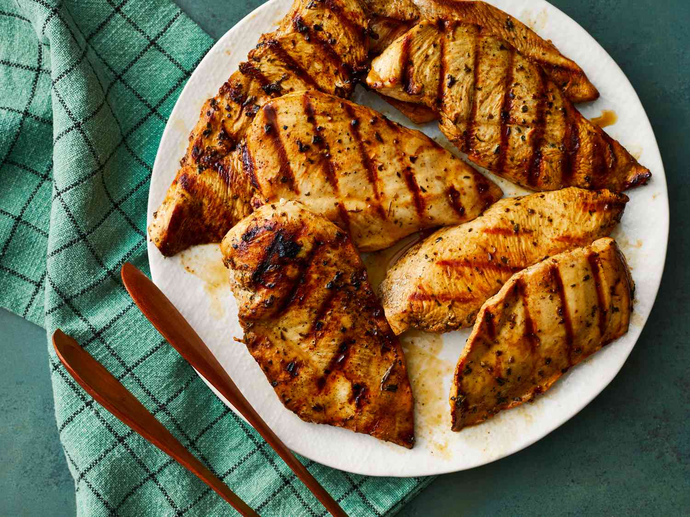

Grilled Chicken Marinade

Description
This top-rated grilled chicken marinade recipe ensures perfectly tender, juicy, and flavorful chicken every time.
You likely have everything you need for this top-rated grilled chicken marinade in your pantry. If not, here's what you'll need to add to your grocery list:
Ingredients
- Red wine vinegar: This top-rated grilled chicken marinade starts with sweet, tangy, and flavorful red wine vinegar.
- Oil: Aromatic olive oil infuses the meat with flavor and moisture, ensuring deliciously juicy chicken every time.
- Soy sauce: This grilled chicken marinade calls for low sodium soy sauce, which we think delivers the perfect amount of saltiness. Of course, if you like your marinade extra salty, you can use regular soy sauce.
- Spices and seasonings: This savory grilled chicken marinade calls for these earthy, herbaceous spices and seasonings: dried parsley flakes, dried basil, dried oregano, garlic powder, and ground black pepper.
Steps
- Step1: Gather all ingredients.
- Step2: Whisk vinegar, soy sauce, olive oil, parsley, basil, oregano, garlic powder, and black pepper together in a bowl.
- Step3: Pour into a resealable plastic bag. Add chicken, coat with the marinade, squeeze out excess air, and seal the bag. Marinate in the refrigerator, 2 to 4 hours.
- Step4: Preheat grill for medium-low heat and lightly oil the grate. Drain and discard marinade.
- Step5: Grill chicken on the preheated grill until no longer pink in the center, 4 to 5 minutes per side. An instant-read thermometer inserted into the center should read at least 165 degrees F (74 degrees C).
Home